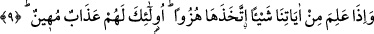
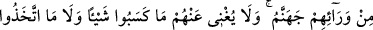

konusunda âyet mecâzî mânâya hamledilmiştir.
“Sonra büyüklük taslayarak sanki hiç onları işitmemiş gibi (küfründe) direnir.” Bu
kişi sanki hiç duymamış gibidir. Bunun hali hiç duymayanın haline benzetilmiştir. Tahfif
için âyetteki şân zamiri ve “yesîru” cümlesi hazfedilmiştir. Kabul etmeme ve
faydalanmama konusunda işitmeyene benzetilmiştir. Allah Teâlâ bu kimseyi günahtaki
ısrar ve kibretmesine karşı uyarmıştır.
“Onu, acı bir azâb ile müjdele.” Burada, verilen haberden duyulan mutluluğu
bildirmek mânâsında olan beşâret/müjdeleme, bu durumun zıddı olan inzâr için
kullanılmıştır. Bu kullanımda inzâr maksadıyla, inzâr ve azap uyarısı, beşâret ve müjde
cinsine dâhil edilmiştir. Bu mânâ, beşâret ve müjde ile örfen bilinen sevinçli haber
mânâsı murad edildiğindedir.
Burada beşâretin asıl mânâsı da murad edilmiş olabilir. Zira beşaret aslında lügat
itibariyle “yüzün derisinde etkili olup değişiklik meydana getiren haber”dir. Bu durum
sevinçli ve hüzünlü habere de şâmildir. Bunun için Keşfu’l-esrâr’da âyetin bu
bölümüne “o kimseye üzüntünün yüzünde zâhir olacağı bir haber ver” şeklinde mânâ
verilmiştir.
9. (O) âyetlerimizden bir şey öğrendiği zaman onlarla alay eder. Onlar için
alçaltıcı bir azap vardır!
“O, âyetlerimizden bir şey öğrendiği zaman onlarla alay eder.” Bizim
âyetlerimizden bir şey öğrendiğinde onunla alay eder. Alay etmesi, o şeyi hakikati üzere
bilmesinden değildir. O, yalnız işittiğini değil, âyetlerin hepsini alaya alır. Bu sûretle
Hak’tan ve doğruluktan uzaklaşmış olur.
Nadr b. Hâris, bu âyetlerle alay eder, acem hikâye ve masallarıyla bu âyetlere
mukâbele ve muâraza ederdi. Halka ve insanlara bu âyetlerin aslı olmadığını söylerdi.
Ebû Cehil de, halka kaymak ve hurma yedirir. “Zıkkımlanın, yiyin, işte Muhammed’in
sizi tehdid ettiği zakkum budur” der, zakkumu kaymak ve hurma olarak yorumlardı.
“İşte öyleleri için alçaltıcı bir azâb vardır.” Buradaki “işte öyleleri” ifâdesi bütün
çirkin vasıflara sahip olması bakımından önceki ayette geçen “Her yalancı ve günahkar
kişi”ye/“küllü effâkin”e işârettir.
Allah onları zelil kılıp izzet ve şereflerini yok eder. Allah’ın âyetleriyle alay
etmelerine mukabil burada azab alçaltıcı olmakla nitelenmiştir.